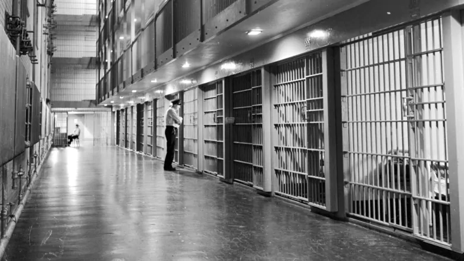
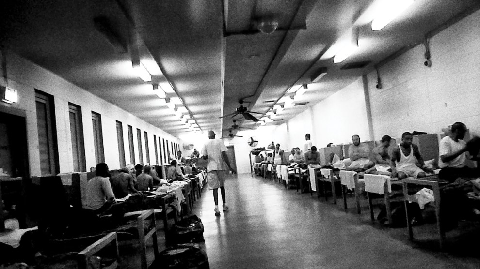

Prisons are facilities meant to hold dangerous and disruptive people for the purposes of protecting others, punishing the disruptive elements, and ultimately reforming them into productive members of society.
Unfortunately in the United States, the majority of prisons and the people that run them are profit motivated. This means that they put their bottom line over the reformation of their inmates. They cut corners in any way they can get away with, especially on reformative programs. This is because they get most of their money from government grants which encourage them to stay as full as possible, for as long as possible.
Many prisons also make large amounts of money through forced prison labor. This is a legal form of modern slavery, where prisoners are made to manufacture things like textiles in sweatshop conditions, among other forms of labor. They do this for almost-non-existant wages, under threat of punishment such as sentence extension, rejection of parole, and indefinite solitary confinement.
Despite numerous strikes against this forced labor, its minimal pay, and terrible conditions, things have barely changed for the better. Those who participate in and organize these strikes often face severe punishments, of questionable legality.
U.S. courts have repeatedly ruled that convicts are not protected by the constitutional prohibition against involuntary servitude.